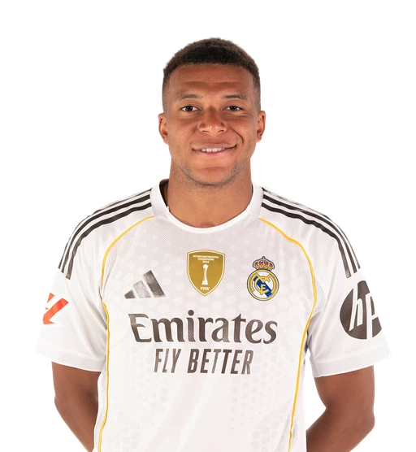
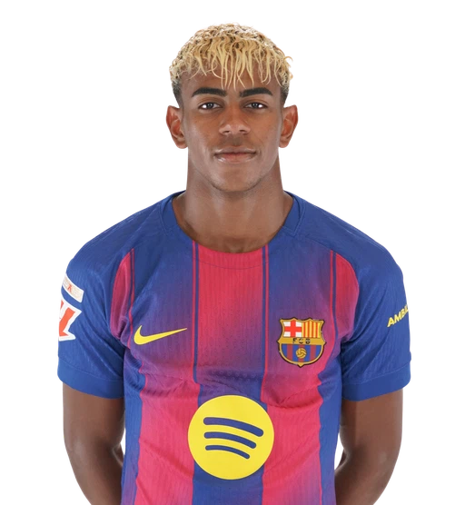
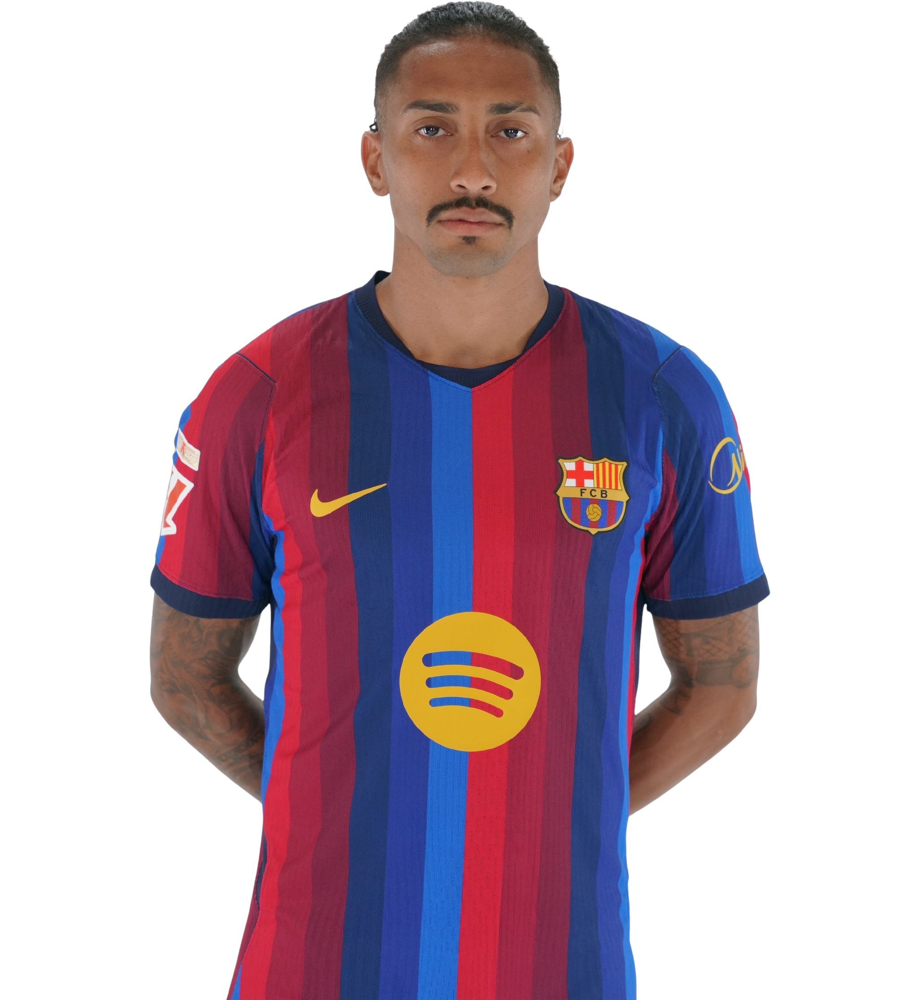

Mbappé
Atacante francês conhecido pela velocidade e finalização.
Ver perfil e estatísticasConheça alguns jogadores importantes do futebol atual.

Atacante francês conhecido pela velocidade e finalização.
Ver perfil e estatísticas
Atacante espanhol conhecido pelo drible e criatividade.
Ver perfil e estatísticas
Atacante georgiano conhecido pela habilidade com a bola.
Ver perfil e estatísticas
Atacante brasileiro conhecido pela velocidade e boa visão.
Ver perfil e estatísticas